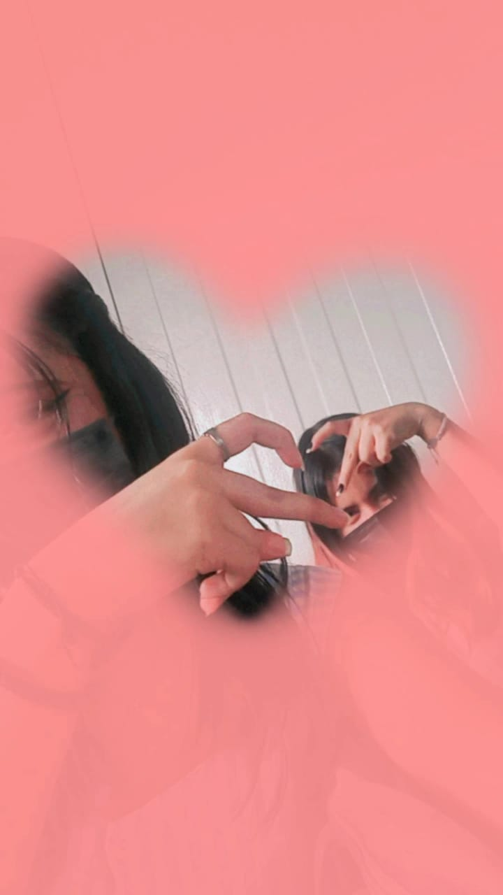

Eres la mejor amistad que he tenido, ósea contigo puedo hablar de cualquier cosa sin aburrirme, nos las hemos pasado echando chisme, criticando a la gente que nos cae mal y que nos cae bien sin importar lo que digan de nosotras, podemos hacer lo que sea, aguantamos nuestros humores la una a la otra, nos alegramos por los logros de la una y de la otra, nos apoyamos en todo, tratamos de estar siempre la una a la otra, siempre nos damos un abrazo cuando mas lo necesitamos, siempre estamos ahí la una a la otra cuando una de nosotras dos esta triste, enojada, feliz, siempre vamos a estar ahí, nos pasamos las tareas y los trabajos sin importar nada, siempre vamos a estar agarradas de la mano por si una se cae, siempre vamos a estar feliz, siempre nos vamos a cubrir en todo, siempre nos preocuparemos la una a la otra, siempre tendremos la confianza de contarnos lo que nos paso sea bueno o mala, siempre nos vamos a escuchar , siempre vas a estar feliz de que yo me ligue a uno diferente cuando a pesar del otro allá sido fallido, siempre me ayudabas a ligarme a alguien porque no querías verme triste, siempre te cubrí cuando te besabas con alguien mas, siempre voy a estar orgullosa de ti, si a ti te cae mal alguien a mi también me va a caer mal, tuve la confianza de contarte todos mis secretos, siempre coincidimos en muchas cosas que eso me da mucha felicidad saber que tengo una gran conexión contigo, somos mas que amigas somos todo y eso lo amo, gracias por todo, no pude tener mejor compañera que tu, se que nos vamos a distanciar y eso me duele porque formamos una increíble amistad, fue la mejor amistad que pude tener y quiero que sepas que vas a lograr todo lo que te propones, siempre estaré orgullosa de ti, quiero verte triunfar, se que vas a hacer un gran trabajo en el semestre que viene mucho éxito en todo, este no es un adiós es un hasta luego se que nos volveremos a encontrar, ti amo con todo mi corazón eres la mejor que no se te olvide, quiero que estes feliz siempre, quiero que tu relacion con Adrian llegue muy lejos estoy muy orgullosa de ti y van salir de todas por las que van a pasar, no dejes que nada ni nadie arruine tu relacion ustedes son muy fuertes, su relacion es maravillosa y quiero que lleguen muy lejos, aqui estare siempre para ti, no olvides que eres hermosa y no dejes que nadie te meta inseguridades tu eres grandiosa mi niña, gracias por darme los mejores dias de mi vida, eres la mejor amistad que pude haber tenido, gracias por todo no sabes lo mucho que te agradezco por estar a mi lado siempre, muchas gracias por todo, y no olvides que siempre estare para ti en las buenas en las malas y en las peores, espero que la distancia no nos separe tanto y si es asi quiero que sepas que fuiste la mejor amistad y la mejor compañia en el semestre pasado y que tu vales mucho y no dejes que nadie te diga lo contrario, tu fuiste mi todo, mi amiga, mi mejor amiga, mi novia y mi esposa fue tan bonito todo lo que vivimos y nunca lo olvidare, y no me quiero ir sin antes decir que besas muy bien jiji y quien diga lo contrario le parto su mauser, pero bueno que tu relacion con Adrian dure mucho y si te hace algo me dices y le parto su mauser tu vales mucho y su relacion es increible, ti amo con todo mi corazon, gracias por todo,como dije esto no es un adios si no un hasta luego, espero volvernos a encontrar, ti amo mi niña hermosa<3